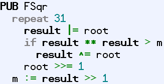
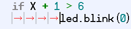
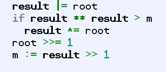
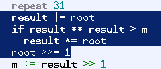
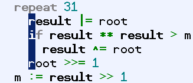
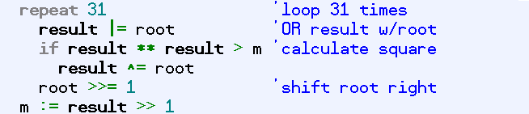
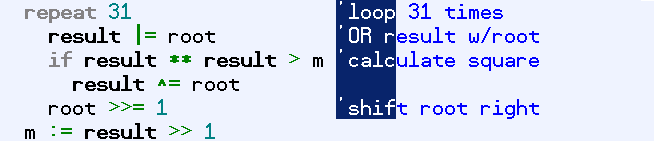
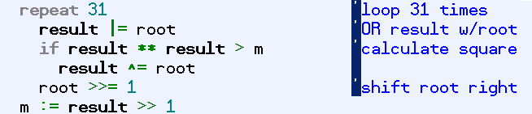

A common programming practice is to indent blocks of code that are either in loops or are conditionally executed in order to make that code easier to read. The act of doing this is called “indenting.” We’ll call the opposite action, shifting code to the left, “outdenting.” The Spin language requires this kind of formatting to indicate which lines are within loops or conditional blocks. The Propeller Tool allows for indenting and outdenting of single lines and multiple lines to make this easier to accomplish while creating or maintaining code.
For Spin code, the Propeller Tool uses a set of fixed tab positions that you can change under the Preferences - Operation Tab in the Preferences Dialog. Each Spin block (CON, VAR, OBJ, PUB, PRI, and DAT) has its own Fixed Tab settings. The Tab key moves the cursor to the next tab position (to the right) and Shift + Tab moves the cursor to the previous tab position (to the left). Additionally, the Backspace key moves to the previous tab position depending on the text around it; more on this later. The default tab settings for the PUB and PRI blocks include tab positions for every two characters near the start of the line to support common code indentions.
The example below shows a public method, FSqr, containing lines at various levels of indention, each two characters apart.

Fixed Tab Default Setting for PUB and PRI Blocks
Using the Tab key, this code could have quickly been entered with the following sequence on the keyboard:
Note that the Enter key automatically aligns the cursor to the level of indention currently in use; this means the Tab key needs to be pressed only once to indent to the next level.
If there are characters to the right of the cursor when the Tab key is pressed, they are shifted to the right as well.

Indenting a single line.
If the cursor is immediately to the left of the first character on a line, both the Shift + Tab and the Backspace keys cause the cursor and the text to be shifted left to the previous tab position; i.e.: outdenting. If, however, the cursor is not immediately to the left of the first character on a line, Backspace acts normally (deleting the previous character) and Shift + Tab moves only the cursor to the previous tab position.
Outdenting a single line.
In addition to affecting single lines, multiple lines of code can be indented or outdented to fixed tab positions easily. You can do this with entire lines of code, or with specific blocks of text on adjacent lines, such as a set of code comments.
Suppose we wanted to take the first four lines of this example and encase them in a “repeat 31” loop; to repeat those lines 31 times.

Sample Code Block. We want to make the first four lines repeat 31 times.

Step 1: Insert the instruction repeat 31 above the block.
Step 2: With a mouse, select the four lines to indent.

Step 3: Press the Tab key to indent the selected lines.
Note that the four lines we had selected in the second step are now indented to the next fixed tab position (two spaces to the right of the start of the “repeat”) and the selection changed to a single column surrounding the first characters of the lines. The selection changed to indicate that we performed a multi-line indention action. Pressing the Tab key again will indent that group of lines further and pressing Shift + Tab will outdent that group of lines.
Any contiguous group of lines can be indented or outdented in this fashion. The selection itself doesn't have to include the entire line either; it only needs to include at least one character of more than one line to work. This type of selection is called a “stream” selection.
The second type of selection, a “block” selection (see Insert and Overwrite Modes), can also be used to indent or outdent portions of lines. The picture below shows our example with comments to the right of the lines:

Sample Code Block with Comments to the Right

Step 1: Block-select the comment lines (Alt + Left Mouse Button and Drag).

Step 2: Press the Tab key to indent the comments, or Shift+Tab to outent them.
At this point, the Tab or Shift+Tab will move the selected text to the next fixed tab position, at least up to any characters the block may bump into.
Propeller Help Version 1.2
Copyright © Parallax Inc., dba Parallax Semiconductor
6/17/2011